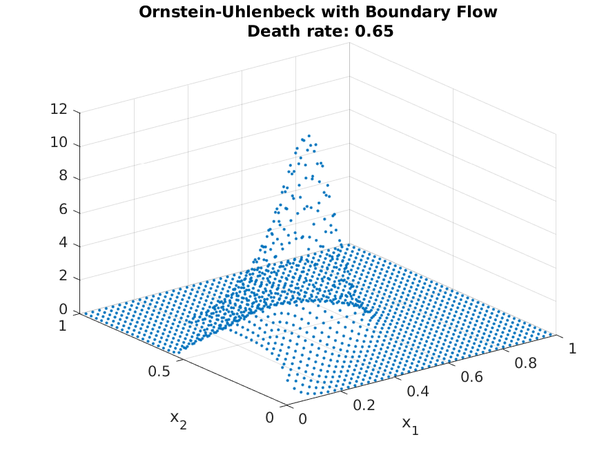
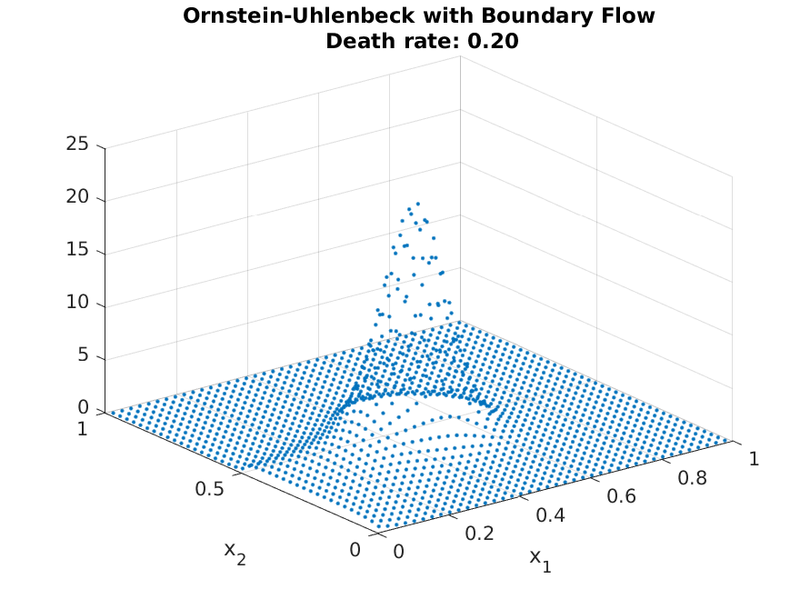
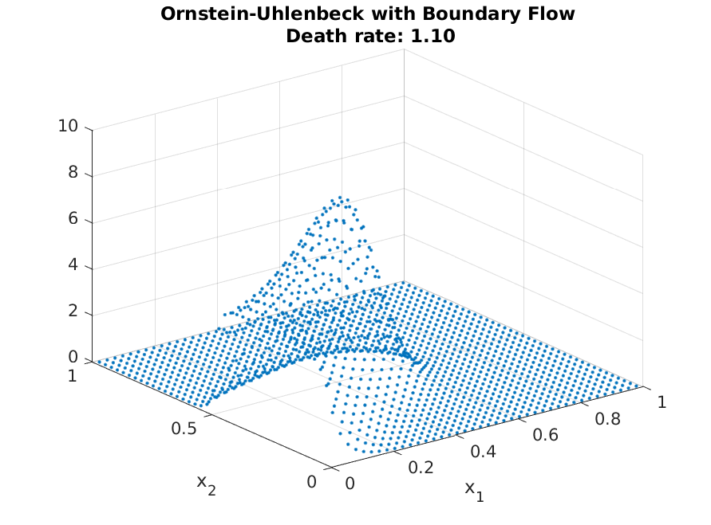
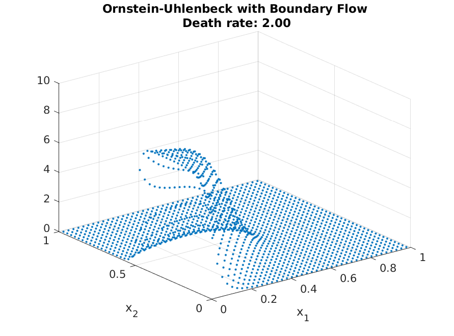

OU Process with Boundary Conditions¶
Expected Read Time: XXXXX
In this tutorial, we will work through how to handle the boundary condition. We will still work with the Ornstein-Uhlenbeck process, but introduce “birth” of agents the edge \(x_1 = 0\) and \(x_2 \in [0, 0.5]\). To make the equation to have a steady state distribution, we also introduce death rate (constant proportion). Looking at the steady-state distribution would actually be easier to follow. In the figure below, we have the resulting steady-state distribution from the dynamics.
{kind=link}
One see clear mass of people in the “birth edge,” and mass moving toward the center of the OU process. The actual shape of the resulting steady-state will depend on the actually parameter values.
Implementing these additions are also simple using the compute_transition_matrix_boundary function.
Continuing from tutorial 2 of the grid definition for the OU-process, we only need to introduce transition matrix. We will handle “death” first. The syntax for this is
>> A_FP = A_FP + grid.compute_transition_matrix_boundary(1:grid.num_n, ones(grid.num_n, 1), -death_rate*ones(grid.num_n, 1), ones(grid.num_n, 1));
where compute_transition_matrix_boundary takes (node to add flow, direction of flow, flow rate, normal direction). Hence, this function will take death_rate from each cell without accounting them into a different cell.
With the inflow, the flow-rate is not dependent on the current internal distribution. Hence, the functional form we need to handle is
where \(b\) stands for the inflow. We can compute this flow again with the same function. However, first we need to find the relevant edge, which we do so by
>> left_boundary = grid.n2bd(:,1) == 0 & (grid.n2bd(:,2) < 0.5);
>> ind_left = find(left_boundary);
which check whether \(x_1 = 0\) and \(x_2 \in [0, 0.5]\). Given this, we fill in the relevant information for the compute_transition_matrix_boundary function.
>> n_ind = length(ind_left);
>> flow = flow_rate*ones(n_ind, 1);
>> direction = ones(n_ind, 1);
>> is_left = true(n_ind, 1);
and compute the distribution as usual
>> g = A_FP\(grid.compute_transition_matrix_boundary(ind_left, direction, flow, is_left)*ones(grid.num_n, 1));
>> g = g./sum(g);
Resulting in the distribution given above. As with before, adjusting for different parameter values are straight forward. As can be seen from the following plot, the distribution mirrors the steady-state of the OU-process with low death rate, but mirrors the entry more strongly with high death rates (as agents do not have enough time to approach the steady-state locations)
  {kind=link}
{kind=link}
{kind=link}
This concludes the tutorials, and should be sufficient for most economic applications. The afv_grid is written to abstract away all implementation details, but if you find an application where the abstraction is too restrictive, one can refer to the Technical Documentation to see the underlying implementations.